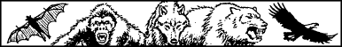
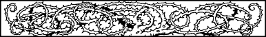

Grand Master Disciplines
Kai & Magnakai Disciplines
During your distinguished rise to the rank of Kai Grand Master you have become proficient in all of the basic Kai and Magnakai Disciplines. These Disciplines have provided you with a formidable arsenal of natural abilities which have served you well in the fight against the agents and champions of Naar, King of the Darkness. A brief summary of your skills is given below:
- Weaponmastery
- Proficiency with all close combat and missile weapons. Master of unarmed combat; no COMBAT SKILL loss when fighting bare-handed.
- Animal Control
- Communication with most animals; limited control over hostile creatures. Can use woodland animals as guides and can block a non-sentient creature’s sense of taste and smell.
- Curing
- Steady restoration of lost ENDURANCE points (to self and others) as a result of combat wounds. Neutralization of poisons, venoms, and toxins. Repair of serious battle-wounds.
- Invisibility
- Mask body heat and scent; hide effectively; mask sounds during movement; minor alterations of physical appearance.
- Huntmastery
- Effective hunting of food in the wild; increased agility; intensified vision, hearing, smell, and night vision.
- Pathsmanship
- Read languages, decipher symbols, read footprints and tracks. Intuitive knowledge of compass points; detection of enemy ambush up to 500 yards; ability to cross terrain without leaving tracks; converse with sentient creatures; mask self from psychic spells of detection.
- Psi-surge
- Attack enemies using the powers of the mind; set up disruptive vibrations in objects; confuse enemies.
- Psi-screen
- Defence against hypnosis, supernatural illusions, charms, hostile telepathy, and evil spirits. Ability to divert and re-channel hostile psychic energy.
- Nexus
- Move small items by projection of mind power; withstand extremes of temperature; extinguish fire by force of will; limited immunity to flames, toxic gases, and corrosive liquids.
- Divination
- Sense imminent danger; detect invisible or hidden enemy; telepathic communication; recognize magic-using and/or magical creatures; detect psychic residues; limited ability to leave body and spirit-walk.
Now, through the pursuit of new skills and the further development of your innate Kai abilities, you have set out upon a path of discovery that no other Kai Grand Master has ever attempted with success. Your determination to become the first Kai Supreme Master, by acquiring total proficiency in all twelve of the Grand Master Disciplines, is an awe-inspiring challenge. You will be venturing into the unknown, pushing back the boundaries of human limitation in the pursuit of greatness and the cause of Good. May the blessings of the Gods Kai and Ishir go with you on your brave and noble quest.
In the years following the demise of the Darklords you have reached the rank of Kai Grand Defender, which means that you have mastered four of the Grand Master Disciplines listed below. It is up to you to choose which four Disciplines these are. As all of the Grand Master Disciplines may be of use to you at some point during your quest, pick your four skills with care. The correct use of a Grand Master Discipline at the right time could save your life. When you have chosen your four Disciplines, enter them in the Grand Master Disciplines section of your Action Chart.
Grand Weaponmastery

This Discipline enables a Grand Master to become supremely efficient in the use of all weapons. When you enter combat with one of your Grand Weaponmastery weapons, you add 5 points to your COMBAT SKILL. The rank of Kai Grand Defender, with which you begin the Lone Wolf Grand Master series, means you are supremely efficient in the use of two of the weapons listed below. For each book that you complete in the Lone Wolf Grand Master series (Books 13–20), you will gain mastery of an additional weapon. For example, if you complete The Plague Lords of Ruel and have the Grand Master Discipline of Grand Weaponmastery at the beginning of the next Lone Wolf Grand Master book, you may choose an additional Weapon to gain mastery of.

If you have the Discipline of Grand Weaponmastery with Bow, you may add 5 to any number that you pick from the Random Number Table, when using the Bow. 4
Animal Mastery
{kind=link}

Grand Masters have considerable control over hostile, non-sentient creatures. Also, they have the ability to converse with birds and fishes, and use them as guides.
Deliverance (Advanced Curing)

Grand Masters are able to use their healing power to repair serious battle-wounds. If, whilst in combat, their ENDURANCE is reduced to 8 points or less, they can draw upon their mastery to restore 20 ENDURANCE points. This ability can only be used once every 20 days.
Assimilance (Advanced Invisibility)
{kind=link}
Grand Masters are able to effect striking changes to their physical appearance, and maintain these changes over a period of a few days. They have also mastered advanced camouflage techniques that make them virtually undetectable in an open landscape.
Grand Huntmastery
{kind=link}

Grand Masters are able to see in total darkness and have greatly heightened senses of touch and taste. If you have chosen the Discipline of Grand Huntmastery as one of your skills, you will not need to tick off a Meal when instructed to eat.
Grand Pathsmanship

Grand Masters are able to resist entrapment by hostile plants and have a super-awareness of ambush, or the threat of ambush, in woods and dense forests.
Kai-surge
{kind=link}
When using their psychic ability to attack an enemy, Grand Masters may add 8 points to their COMBAT SKILL. For every round in which Kai-surge is used, they need only deduct 1 ENDURANCE point. Grand Masters have the option of using a weaker form of psychic attack called Mindblast. When using this lesser attack, they may add 4 points to their COMBAT SKILL without loss of ENDURANCE points. (Kai-surge, Psi-surge, and Mindblast cannot be used simultaneously.)
Grand Masters cannot use Kai-surge if their ENDURANCE score falls to 6 points or below.
Kai-screen

In psychic combat, Grand Masters are able to construct mind fortresses capable of protecting themselves and others. The strength and capacity of these fortresses increase as a Grand Master advances in rank.
Grand Nexus

Grand Masters are able to withstand contact with harmful elements, such as flames and acids, for upwards of an hour in duration. This ability increases as a Grand Master advances in rank.
Telegnosis (Advanced Divination)
{kind=link}
This Discipline enables a Grand Master to spirit-walk for far greater lengths of time, and with far fewer ill-effects. Duration and the protection of his inanimate body increase as a Grand Master advances in rank.
Magi-magic
{kind=link}
Under the tutelage of Lord Rimoah, you have been able to master the rudimentary skills of battle-magic, as taught to the Vakeros—the native warriors of Dessi. These skills include the basic use of basic Old Kingdom Spells such as Shield, Power Word, and Invisible Fist. As you advance in rank, so will your knowledge and mastery of Old Kingdom magic increase.
Kai-alchemy
{kind=link}
Under the tutelage of Guildmaster Banedon, you have mastered the elementary spells of Left-handed magic, as practised by the Brotherhood of the Crystal Star. These spells include Lightning Hand, Levitation, and Mind Charm. As you advance in rank, so will your knowledge and mastery of Left-handed magic increase, enabling you eventually to craft new Kai weapons and artefacts.
Footnotes
[4] Weaponmastery bonuses are replaced by Grand Weaponmastery bonuses, not added cumulatively (cf. Lone Wolf Club Newsletter 28).
If you have completed previous adventures, already possess the Magnakai Discipline of Weaponmastery with Bow, and have reached the rank of Mentora, it seems that you should already be able to add 5 to numbers picked from the Random Number Table (i.e. the basic Weaponmastery with Bow bonus of 3 added to the Mentora bonus of 2 for all missile weapons). Likely, the author intended the Weaponmastery bonus at the Mentora rank to be a ‘hidden loyalty bonus’ (cf. Lone Wolf Club Newsletter 28). In view of this, the +2 Mentora bonus is therefore not cumulative with Grand Weaponmastery with Bow.